圖書列表
好士聆走讀手冊01
漫遊中山北路五段
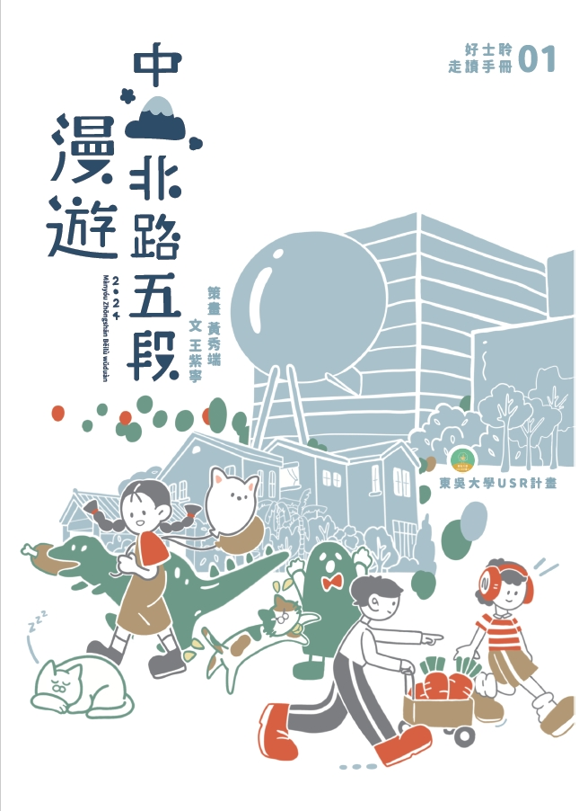
閱讀 PDF
好士聆走讀手冊02
士林珍美廟
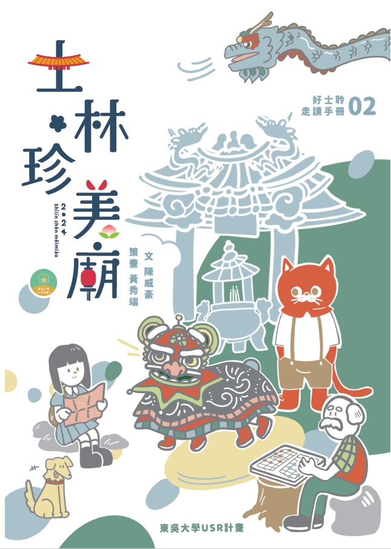
閱讀 PDF
好士聆走讀手冊03
舊跟新 揪甘心
閱讀 PDF
跟著老蔣遊士林
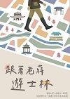
閱讀 PDF
臺灣傳統宗教的執事人員與法事祭儀概觀
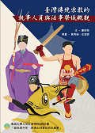
閱讀 PDF
2020芝山巖慶讚中元
(中文版)
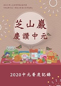
閱讀 PDF
2020芝山巖慶讚中元
(英文版)
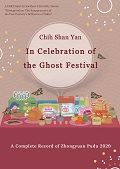
閱讀 PDF
2020芝山巖慶讚中元
（日文版）
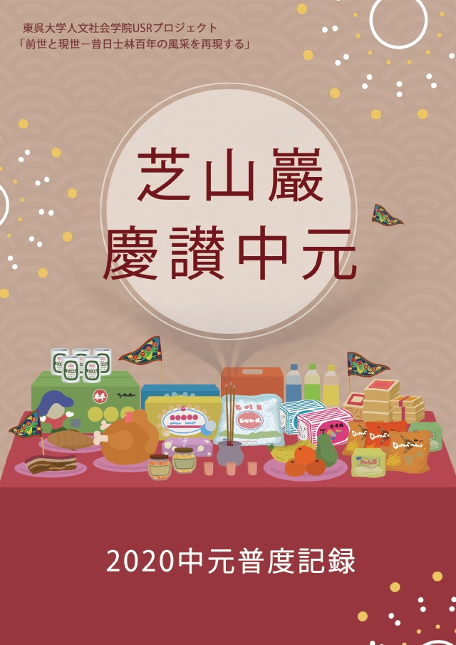
閱讀 PDF
剪黏是什麼
走到廟前抬頭看
(中文版)
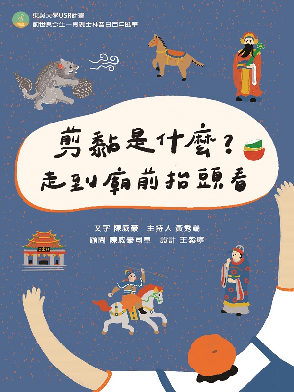
閱讀 PDF
剪黏是什麼
走到廟前抬頭看
(英文版)
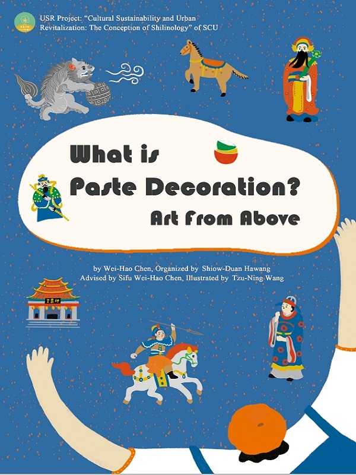
閱讀 PDF
走讀士林
福德洋圳參訪手冊
(英文版)
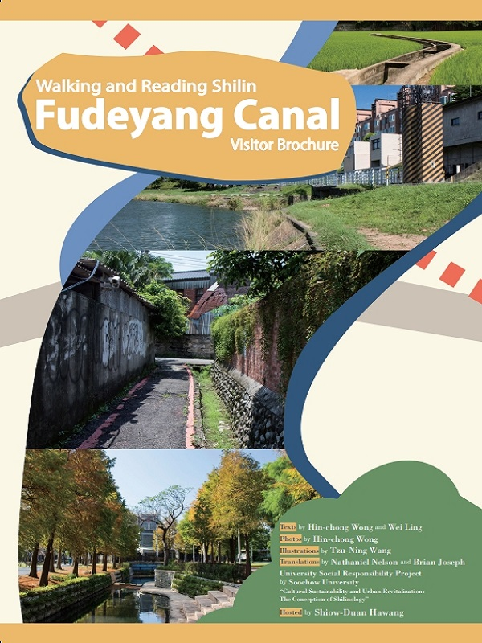
閱讀 PDF
平安就是符
認識寺廟的平安符
閱讀 PDF
勁草不為風偃去
錢穆
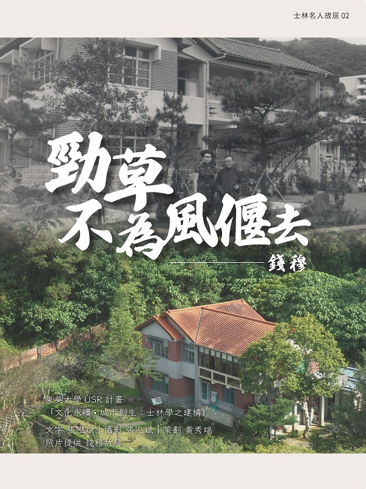
閱讀 PDF
浪濤中的消波石
張群
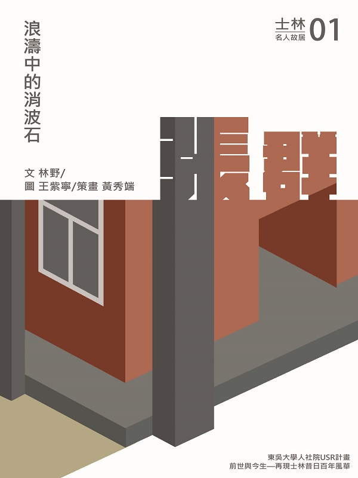
閱讀 PDF
八芝蘭講古趣
五鬼弄金獅
閱讀 PDF
伊澤修二先生與臺灣教育
1 渡臺
閱讀 PDF
2 學務部的開設
閱讀 PDF
3 學務部轉移至芝山巖
閱讀 PDF
4視察臺南並會見巴克禮
閱讀 PDF
5 六氏先生遇害
閱讀 PDF
6 建立系統性教育
閱讀 PDF
7 原住民教育問題
閱讀 PDF
8 師範教育之開創
閱讀 PDF
9 國語學校附屬學校
閱讀 PDF
10 女子教育之展開
閱讀 PDF
11 教科書之編纂
閱讀 PDF
12 講習生
眼中的伊澤先生
閱讀 PDF
13 離臺
閱讀 PDF
14 離臺後的先生與臺灣
閱讀 PDF
尋聲士林 地方產業與生活記憶的口述歷史
1 畫不膩的肖像
黃明輝先生訪談紀錄
閱讀 PDF
2 夕陽西下的竹行
朱義武先生訪談紀錄
閱讀 PDF
3 為愛書人築夢
蔡能寶女士訪談紀錄
閱讀 PDF
4 一甲子的舌尖記憶
詹正虎先生訪談紀錄
閱讀 PDF
5 沁涼時光
張振銘先生訪談紀錄
閱讀 PDF
6 悠悠鳳時
鄭安先收訪談紀錄
閱讀 PDF
7 寵物後勤支援人
陳春偉先生 張春桃女士訪談紀錄
閱讀 PDF
8 暖心百年
張寶仁先生訪談紀錄
閱讀 PDF
9 春風化雨四十載
黃顯宗先生訪談紀錄
閱讀 PDF
10 麵香四溢
郭世宏先生訪談紀錄
閱讀 PDF
返回首頁